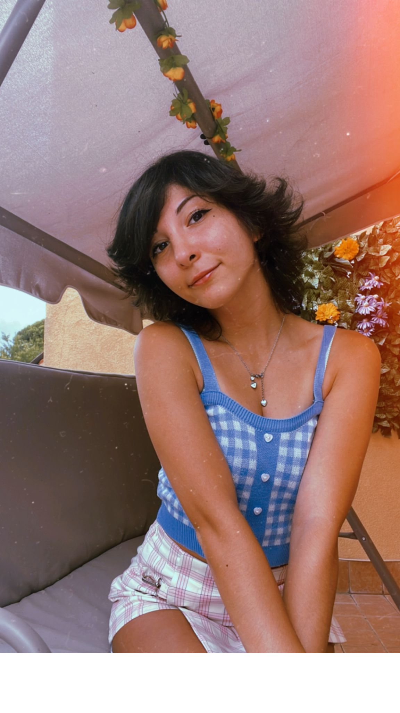

Su di me
+39-3342920267
giada.gange@hotmail.it
@Giada_illustrations_

Mi chiamo Giada, nata a Catania nel 1999. Dopo aver completato il liceo ho studiato alla Nautilus Academy nel 2018, dove ho appreso le basi della digital Art e in particolare la funzione della struttura delle illustrazioni infantili, concludendo con l’attestato e il master in digital Art eseguito da Antonio De Luca. Illustrare non è la mia unica passione. Pratico danza e anche palestra, sono una persona determinata e disciplinata. Porto sempre a termine gli obiettivi che mi pongo, non importa quanto siano difficili